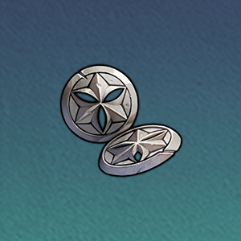
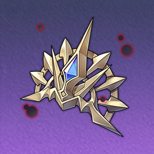
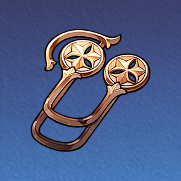
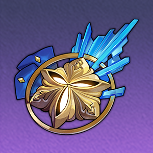

| 突破前 | 突破后 | 突破素材 | |
| 基础生命值 | 153 | - |
-
|
| 基础攻击力 | 84 | - | |
| 基础防御力 | 69 | - |
| 突破前 | 突破后 | 突破素材 | |
| 基础生命值 | 298 | 359 |

铁卫扣饰 5信用点 4000 |
| 基础攻击力 | 164 | 198 | |
| 基础防御力 | 135 | 162 |
| 突破前 | 突破后 | 突破素材 | |
| 基础生命值 | 436 | 497 |
铁卫扣饰 10信用点 8000 |
| 基础攻击力 | 240 | 274 | |
| 基础防御力 | 197 | 225 |
| 突破前 | 突破后 | 突破素材 | |
| 基础生命值 | 574 | 635 |

往日之影的金饰 3

铁卫军徽 6信用点 16000 |
| 基础攻击力 | 316 | 350 | |
| 基础防御力 | 259 | 287 |
| 突破前 | 突破后 | 突破素材 | |
| 基础生命值 | 712 | 773 |
往日之影的金饰 7铁卫军徽 9信用点 40000 |
| 基础攻击力 | 392 | 426 | |
| 基础防御力 | 322 | 349 |
| 突破前 | 突破后 | 突破素材 | |
| 基础生命值 | 849 | 911 |
往日之影的金饰 7

铁卫勋章 9信用点 80000 |
| 基础攻击力 | 468 | 502 | |
| 基础防御力 | 384 | 412 |
| 突破前 | 突破后 | 突破素材 | |
| 基础生命值 | 987 | 1048 |
往日之影的金饰 35铁卫勋章 9信用点 160000 |
| 基础攻击力 | 544 | 578 | |
| 基础防御力 | 446 | 474 |
| 突破前 | 突破后 | 突破素材 | |
| 基础生命值 | 1125 | - |
-
|
| 基础攻击力 | 620 | - | |
| 基础防御力 | 509 | - |